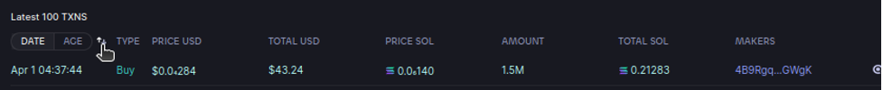
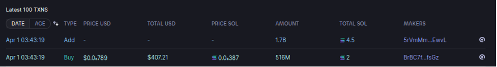
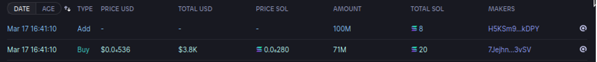

HOW TO DEGEN EFFECTIVELY
Solana is one of the most active chains in crypto at the moment, and with memecoins launching one after the other, it's hard to know which ones to ape into and which one to avoid. By the end of this lengthy guide you should have better pointers as to what to ape and what to avoid. Remember you have to be fast!
For trading new pairs like this, I mostly use photon (sometimes trojan) as a trading software. I’d recommend using photon if you’re on your computer, otherwise use trojan since it’s the fastest bot right now. Trojan also has an airdrop coming really soon worth thousands so it’s worth using even if you have a different bot right now.
If you’re using raydium or jup to swap and buy tokens, you’re way behind the game and you have to use one of the two options above.
WHERE TO FIND NEW TOKENS
If you’re trying to find fresh coins from big caller channels, then you’re more than likely very late to the party, there’s still upside potential of course, just much less. There are levels of degenning and risk, but obviously higher reward if you get the right one.
1 - Watching live pairs
There are telegram groups which call every single coin that launches on SOL without exception. Most of the coins that launch are straight rug pulls that don’t last a minute. You buy it, and then the liquidity is gone and you can no longer sell your tokens. Your money is gone. However, if you do get the right token, you’ll be one of the first holders, thus having infinite upside potential.
2 - Filtered live pairs
These are from telegram “AI” bots which basically call live pairs, but under a certain set of parameters. This usually filters a lot of the trash out, around 50-60% of the filtered calls hit at least 2x. These still have massive upside to them, but just a little less than aping on launch. A lot of these coins run for a bit but still go under, either due to the developer (top holder) selling all his bag, or just not enough momentum to take it off. One of the main ones I use is @solcallbot. They have a free channel with a 30 second delay, and an instant VIP channel. VIP costs about 1 sol a month. Try out the free one first before making a buy.
3 - Caller channels
Depending on who you follow, a lot of callers will be posting a token after it reaches a certain point of stability. Whether that’s a few hours after launch, or a day later, etc. When the dust settles and there’s a first dip, you’ll see people calling it for an entry if it’s a bullish narrative. These can all still go to 0, but depending on who you’re following, these coins have basically reached a safer level.
IDENTIFYING GOOD TOKENS
Regardless of where you found the token, you need to check some vital things before you decide to buy. Don’t chase the hype and the green candles, it’s the fast lane to losing it all.
1 - Check the initial liquidity and snipers:
This is more crucial than I can stress. If you check these two correctly, you’ll avoid most rugs easily. And this is exactly where photon becomes incredibly useful. Once you sign up for it and open a chart, you’ll be able to scroll down and see transactions.
Click on the sort by oldest button, and it will show most of the info you need.
In this example, we have a token with 2.8B supply, but as you can see by the first transaction, only 1.7 billion tokens were added in the liquidity, and another 500 million were sniped. This means that the initial deployer had 60% of the tokens, and 17% were sniped on launch, meaning a total of 77% of the supply is in the hands of the same person.
These are tokens which you should absolutely avoid. And this is the fastest way to check these things in a couple clicks. No need for scans, bots, or the like. Just a quick look can tell you a lot. Sometimes, however, it’s a good thing when teams hold a lot of the supply, but this is only the case if this team is well known and have sent previous projects. It can be a form of “supply control” to avoid tokens going into the wrong hands and getting dumped violently. Alas, that is usually not the case and most deployers that do this are just dumpers. If the coin has been out for a while and the chart is doing well, then you need to dig deeper into Solscan to see if the deployer is still holding anything or not. If the deployer is fully exhausted of their tokens and the chart is still moving, there’s a high chance a community takeover happened, or the narrative is too bullish to care. You need to join the telegram group and investigate deeper. A good tool to use to see if the deployer is still holding anything is this telegram bot, however it only detects tokens that were not added to the LP (so the initial 60%, it cant see the 17% snipe). You’ll find it inefficient in tokens that look like this.
The whole supply was added into the LP, however 71% was sniped on launch. The bot cannot see this properly. With photon, you can check all these things with just a couple of clicks.
2 - Check the actual community vibes:
No token sends without its community backing. Usually if I see good distribution (nowadays around 15-30% to the deployer), I’ll buy a small bag first then join their telegram, check their website, and their twitter to see what’s going on. What does the telegram look like? Are people in it bullish or bearish on the project? How many admins are there? If there are one or two admins, they’re most likely just farming you or they’re not a serious team. The more you see, the more you know this team is serious and has potential. Is there an open VC? If there is, how many people are there and are they actively talking or bullish on the project? What do their socials look like? Do they have a decent banner and logo? Have they bothered with making any unique stickers? Is their website just a template or is it actually funny and unique to the meme? What are their pinned messages like? Is the team sharing new posts, plans, raids, and the like, or is it just random garbage in the pins about trending? These are all questions that should flash through your head while you investigate.
3 - What is the narrative?
Seriously, what is the narrative? This is sometimes the most overlooked part and it can negate all the other checks. If the narrative is good enough, the token will still explode, even if the distribution is bad and there’s no effort on socials etc. Usually fresh narratives that do well are related to recent events regarding famous crypto characters, companies, celebrities, or anything along those lines. You just have to be active in meme culture and keep up with everything in order to spot a good narrative. There will always be a first mover and a second mover. Then after that, way too many derivatives that don’t do anything well. The first mover is the original, the main meme that starts a new meta or sends really hard. For example, when a token called $NUBCAT was released and started moving, a second mover appeared, $NUBDOG, which also moved almost as hard as the original. In the end the first mover is the one that made it to the end, and $NUBDOG dumped shortly after it did its run. If you miss the first mover, chances are the second mover can still make some OK gains, just know its not a long term hold and you should get out soon. After that, there will always be scammy devs launching shittier and shittier derivatives, you’ll start seeing something like $nubshit and $nubhat and other random garbage. You want to steer clear from these and wait until the next first/second movers pop up. Don’t get farmed.
4 - Who called it?
This is another important factor that a lot of people overlook while chasing green. Who actually called these tokens on their channel? If no one called it yet, then you can’t really deduce much. However, if you start seeing channels such as MadApes or Don’s Degens, or other big channels that call 4-5 tokens an hour, then you have to run. Those are sell signals and you don’t want to be near them. Some callers are notorious for buying and dumping on their followers, and if you don’t sell early or you don’t check who called it, you’re prone to getting dumped on. A good place to check universal calls would be https://t.me/CallAnalyserSol or https://t.me/spydefi. These are both channels that notify you when a caller calls a token, and from there you can see if these types of people call the token you’re about to buy.
HOW MUCH DO I BUY?
This in the end depends on your financial situation and your total balance. At most, you should be buying 10-15% of your balance into a single token at a time. Don’t get greedy, it will destroy you. If you buy upwards of 60-70% of your balance, or even 100%, how would you feel if the token goes to zero under any circumstances? It’s a viable outcome in any coin, so you always need to beware of how much you buy. If you have 1 SOL in your balance, you shouldn’t be aping 0.8 clips into one coin, because if it fails, or even goes -50%, it will still destroy your balance and you won’t have more shots to try other coins. No-go. If we assume for example that you had 10 plays in a day. Realistically, maybe 4 or 5 of them would turn out to be rugs, a couple of them will do a 2x, and then one or two more can go up to 5x or more. If you start by aping all your balance in the first coin and it turns out to be a rug, you’re doomed for the day. If you choose to do 0.1 only, you’ll likely still end up in profit at the end of the day. That’s what you’re looking for. And as always, you need to ape what you can afford to lose. When you purchase a coin, you’ve basically lost that money until you cash out. If you can’t afford to lose your entire balance, or even half, or a quarter of it in a token, then you’re buying too much. Not only is this bad for your portfolio, you’ll also end up making bad decisions along the way because you can’t leave the chart. Picture this - you bought a token with half your balance. Your portfolio really depends on this, so you need to sit and watch it, right? The token starts dipping, and you see your numbers dwindling down, but surely it has to reverse because you invested so much, and you end up investing 25% more to DCA. You’ll still keep watching the chart violently, and the moment it reaches back to breakeven, you’ll be so relieved that you’ll most likely sell it for a little loss or minor profits, when you could’ve made much more buy just waiting. A lot of people can’t control their emotions and they end up spiraling into DCA hell or making bad decisions because of the weight of the investment. You will not become profitable like this, and even if this one play works out the way you want, you’ll blow your profits in the next few by repeating the same mistakes again. If you buy what you can afford to lose, you wouldn’t really be caring too much about the chart or price action. You’ll check in every once in a while, if it makes profits you can cash them out and if it plummets, you really didn’t invest too much anyway. You’ll build your portfolio slowly. Once you reach a certain point, you will grow exponentially.
WHEN DO I BUY?
Every upside has a downside. You could be seeing a coin pumping really hard, and you’ll start experiencing FOMO and wanting to buy in because you think it will keep going up. Unfortunately, this isn’t the case 90% of the time. If you find a token before it started pumping hard, it’s safe to jump in if everything looks good as outlined above. If the price increased 2x or 2.5x, it’s still pretty early and you have a good shot at profits. However, if it moved up by 10x or so, there will naturally be early investors that want to take their profits out. You don’t want to be their exit liquidity. Most of the time, after a coin has a crazy upside, you should see a 60% pullback on the chart (E.G pumps to 100k, falls to 40k or 50k.). This is usually a good sign to buy in if the coin is showing any life and the community is still present.You either want to get in before the first pump, or after the first dip. If it already pumped, wait until it dips. Then when you think it bottomed, wait more. Then a little bit more. There will always be people selling bottoms, and you don’t want them to sell on your buys. If the fomo is getting too much to you, and you really really think it can pump harder, you should enter with half, or maybe even a quarter of the initial amount you wanted to invest. You have to leave room for yourself to DCA without stepping over your spending limits, otherwise you’ll get into DCA hell and lose much more money than you should if the coin fails. Always worth waiting and sitting on your hands to make sure it's fully bottomed out.
WHEN DO I SELL?
Before entering any coin, you should have a strategy for when you want to exit, and if you’re really early, leave a moonbag. It pays to have one The safest strategy, albeit with the least promising results, is to sell half your stack when you’re up 2x. You essentially guarantee your initials are out of the game, and all you have in the market now are just profits. When you get that out the way, you’ll have less emotions when dealing with the number because at the end of the day it won’t really affect your portfolio even if it goes to zero. The only downside is that you’ll make 50% less than you normally would have on a trade, but to me this is okay. I would rather my initials be safe than chase a potential 10x that may never come. And if it does, I’ll get a 5x which is still a LOT when you think about it depending on your position size. Remember - making less profits feels WAY better than making huge losses. Think of that before you enter any trade and before you sell off your initials. If you’re feeling more adventurous, you can sell your initials at 2.5x or 3x, or never, but you impose more risk on yourself by delaying it. Once you reach a certain portfolio size, you will naturally stop caring about your initials, since if the whole trade flops you wouldn’t care anyway. But if you’re still small and starting out, ensuring your initials are safe ASAP is the best way to maintain your portfolio and not get wrecked completely. You’ll make it longer in this market if you don’t let greed get to you.
GAS, SLIPPAGE, MEVS
1 - Gas fees:
Gas fees determine how fast your transaction goes through on Solana. If you’re using a bot, you can manually write down how much you want to pay for gas. The higher, the faster you get in.
In most cases, during times where network isn’t congested, you can have 0.005 SOL as your gas fees and you’ll get in just fine. I always set mine to be 0.01, and I’ve noticed increasing it any more than this doesn’t seem to have a noticeable effect on speed. Solana is cheap gas-wise, don’t overpay for it.
2 - Slippage:
Your slippage is also configurable depending on what software you use. It’s essentially a metric of how much % of your initial buy you’re okay with missing out on to make sure your transaction goes through. Usually, you want to set your slippage high if it’s a new volatile launch, but if its an old somewhat stable coin, you want to set it to around 5-6% slippage. Nothing crazy since the price won’t be moving much. If you set a high slippage, your transaction has a chance to be front ran by MEV bots.
If the coin is new however and highly volatile, I usually go for 20-30% slippage and it works well most of the time.
3 - Mev bots:
While they’ve recently been less of a problem, they still do exist and they will affect your transactions. If you have high slippage, mev bots will buy a massive amount before you do, and take advantage of that entire slippage only to sell on you later when you buy at a higher price. You can enable MEV protection in most trading software, but do keep in mind this usually slows down your transaction.